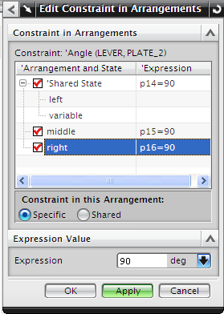

定位 right 布置
- 在装配导航器中，右击 des02_rocker_study_assembly 并选择布置→Right。
-
在约束导航器中，右击角度 (DES02_LEVER, DES02_PLATE_ 2)约束节点并选择在布置中编辑。
您原先输入的90°值有一个指定给 Middle 布置的表达式。
-
在在布置中编辑约束对话框中，确保选择的是 Right 布置。
-
在此布置的约束下，选择特定。
一个在 Right 布置中的表达式被创建了。

-
在表达式值组的表达式输入框中，键入75并回车。
-
点击确定。